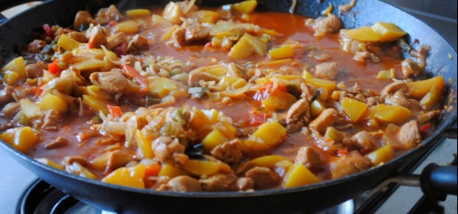

Recept
Wat heeft u nodig voor dit recept?
- 350 gr. Kipfilet
- 1 Ui
- 250 gr. Champignons
- 4 el Ketjap Manis
- 1 el Sambal
- 1 blikje Tomatenpuree
- 2 el Gembersiroop
- 8 Halve Perzikken
Voorbereidings wijzen
Kipfilet in stukjes snijden en de ui fijn snipperen. Verhit in de Braadpan de olie.De ui even aanbakken,kipfilet er bij tot het mooi bruin en gaar is. De champignons meebakken,voeg dan de sambal,t.puree,gembersiroop en 1dl.heet water erbij, laat alles 10 min. stoven met de deksel op de pan. Op smaak brengen met zou en peper,de peziken toevoegen en warm laten worden. Voeg bij de maaltijd witte rijst toe